React Router
Why do we need React Router?
React makes our website into a single web site, which we no longer depend on the server for requesting the html files (server side rendering), but depend on the ripple effect created by state changes to render the browser.
But React is only a UI library and we only have 1 html file and we don't have the default browser navigation provided by the browser.
What if we not only have a homepage, we also have about page or other pages?
Thats why we need React Router to solve this problem.
Basic React Router
There are a few basic properties in 'react-router-dom'.
1. BrowserRouter
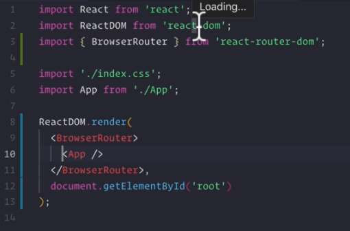Using BroswerRouter to wrap the component, we can entitle the that component all of the functionalities the 'react-router-dom' provides.
2. Route and path
Route is the component that can be used to show different routes to the pages (about page etc.) routes.
Path is the prop used in the Route component to indicate the url path that we want to build.
3. exact
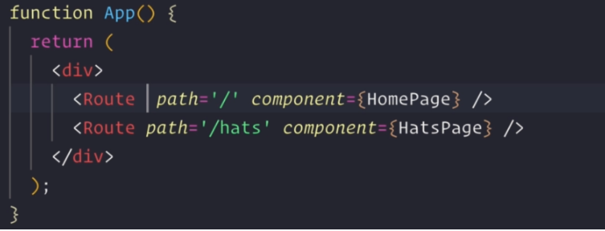 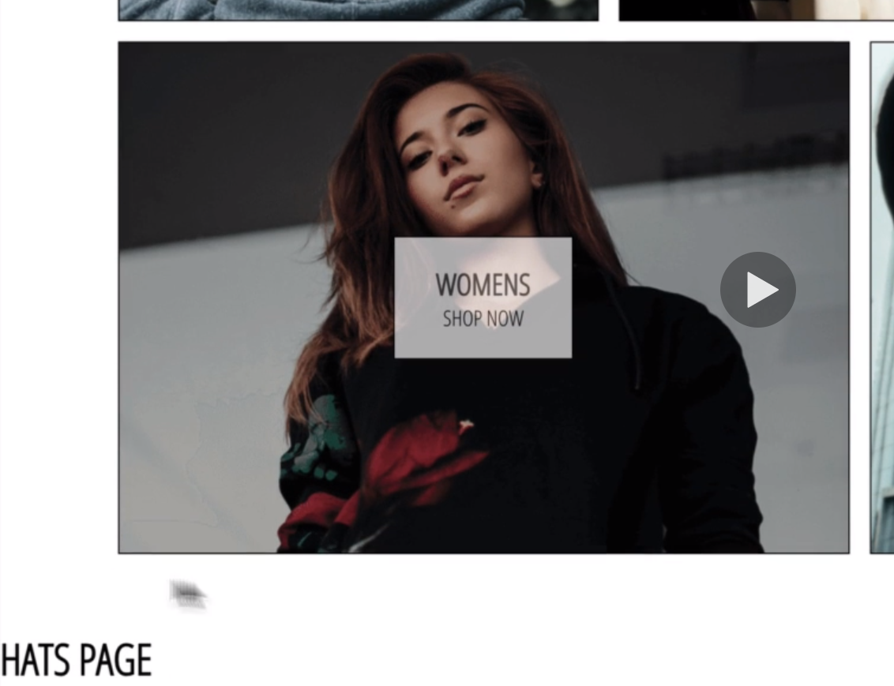It forces we render the oute that has the exact path.
!Otherwise urls that share the same part of url path will appear at the same time. (Right img)!
Exac is the prop used in the Route component, and we must have this on the urls that share the part of the url path with other urls.
Perfect Example:
The homepage - http://localhost:3001/
4. Switch
Switch component is similar with the javascript switch, after it finds the first matching Route, it will stop looking for other Routes.
Our Example:
user types: localhost:3001/hats but localhost:3001/ matches)
It realize the first Route (path='/') matches this condition, so it directs us to the HomePage.
Thats why we need to use exact!
More react-router-dom things
1. Route component's props object
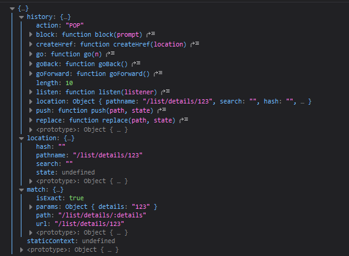As we all know, Inside the Route tag, there is a component argument for us to populate the callBack component (HomePage etc.)
It also pass a props to the target component containing the Url info.
- history obj
- location obj
- match obj
- Inside history obj
- Inside location obj
It contains the info about the url user typed in.
pathname -> string = The actual url path typed by the user.
- Inside match obj
It contains the info of the matched Route component.
isExact -> boolean = is the url matched this Route component perfectly?
params -> obj = Include all the url params passed to this specific Route path.
path -> string = The matched Route's path.
url -> string = The matched Route's url. (with url params written)
2. Url parameter

What is the ':details' in Route path?
Url parameter, it is a dynamically changin value the get passed as an parameter to the component props.
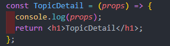 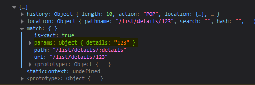http://localhost:3001/list/details/123
Left: Url Param 123 get passed to the corresponding component's props, and we can console.log to see what the props object has.
Right: Url Param 123 is located in the props.match.params.details.
So we can manipulate the data that user inputs in the url for backend or UI prupose!
3. About the Route path
Some one asked about why the below issue happens

This is because
1. The word between the '/' is actually a string, and /li/ is considered not equal to /list/.
2. localhost:3000/list/details/20 matches TopicList ('/list') and TopcDetail? Because 'list' matches both!
BUT '/list/details/12/random' and '/list/123/' won't match the above url, because the first one is too long and the second one failed matching with details and 123.
Thats why we should use Switch and exact!
4. Link and props.history.push() - navigate between react router dom
Both of Link and props.history.push() have the same purpose but different use cases.
Both allows us to navigate between react router dom. not only when the user type in url.
1. Link
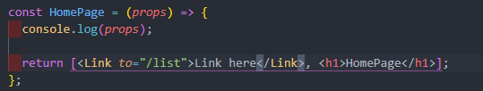 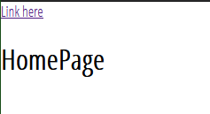Left: Link makes used of to and link to a react router dom path for re rendering.
Right: It is actually like the 'a' tag with href from HTML.
Restriction: Link itselfs is already a component, so it is kind of 'static' and 'inflexible'.
2. props.history.push()
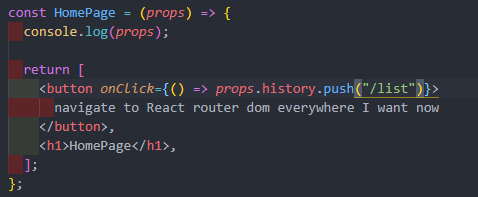 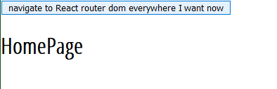Left: props.history.push() is more dynamic because it is not a component, it can be used everywhere. See we use it in the call back function of a button component.
Right: We can now wrap props.history.push() into any component or even inside life cycle hooks.
Link doesn't work in life cycle hooks like componentDIdMount() because they are not jsx but javascrip method.
5. Nested Routing (Dynamic Routing)
Create links that are based on the current url.
With the props that passed to the component inside Route component.
We can create nested routing Link that goes to the react route dom and it is related to the current component path.
Using {prop.match.url}
In the TopicList component, we created 3 different links that is linking to the react route dom path that are based on it's own url.
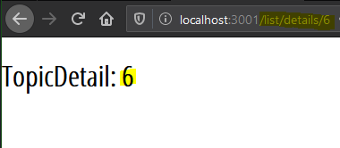The nested routing links direct us to the TopicDetail component
AND
Print the url parameter that we set for the nested routing Link with {props.match.params.touserid}.
6. withRouter()
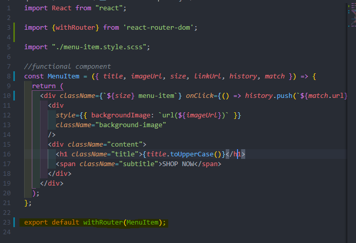withRouter() is a pure function that return us a component with same name that has the access to the history, location, match props.
It has access to the component={} in the Route component would have access to.